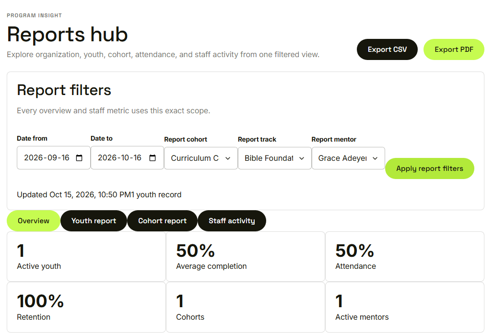
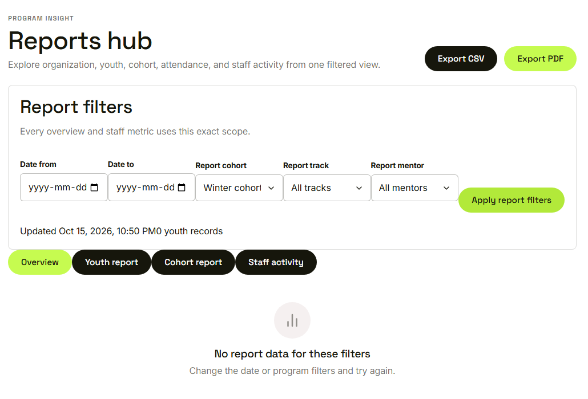
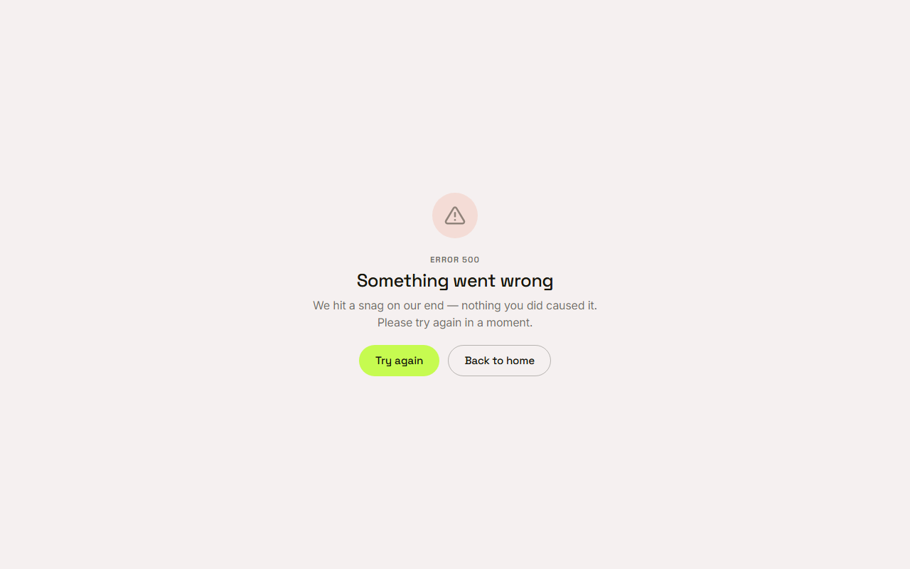

Waypoint · Video 097
Exploring reports
One hub, five filters, every figure in scope
Five filters set the scope

Every figure follows the filters
Four views, one scope
Overview: figures and charts
Youth report: one young person
Cohort report: one cohort
Staff activity: each mentor
An empty scope says so

No report data for these filters
A failure has a way back

Something went wrong, with try again
Things to remember
Five filters: dates, cohort, track, mentor
Every figure follows them, with time and record count
Empty scope: a clear message. Failure: try again
Mentors only see their own youth